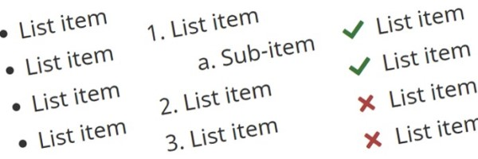

Text formatting: CRA web service manual
Use text formatting to support the most important information on a page.
On this page
- Bold, italics and underlining
- Text alignment
- Text sizing
- Wrapping and truncating text
- Related components and functions
Bold, italics and underlining
Appearance
Regular text
Regular text plus bold text
Regular text plus italicized text
Regular text plus underlined text
Code
HTML
// Text editing effects
<p>Regular text</p><p>Regular text plus <strong>bold text</strong></p><p>Regular text plus <em>italicized text</em></p><p>Regular text plus <u>underlined text</u></p>
Struts
code hereCorrect use
- Use bold for emphasis, but use it sparingly: the more you use it, the less effective it is
- Follow The Canadian Style's rules for applying italics for the following:
- French and foreign words (article 6.03)
- Latin terms and abbreviations (article 6.04)
- titles of publications (including acts and legislation) and works of art (article 6.05)
- legal references (article 6.06)
- mathematical, statistical and scientific material (article 6.11)
Incorrect use
- Don't combine styles, like underlining and bold formatting, unless it's part of the hyperlinked text found on a topic page
- People with dyslexia or other reading disorders may find it difficult to read italicized text. Don't use italics:
- for design or decorative purposes
- to emphasize a word or phrase (use bold sparingly instead)
- for long passages of text, such as quotations
- in page titles
- Don't use underlined text as it mimics the visual appearance of a link, which causes usability problems
Text alignment
Use to align text to the left, centre or right. Avoid using it, unless it adds value to the content.
Centered and right aligned text both have a "ragged" left edged which has been shown to impede reading speed and comprehension. The straight (or “hard”) left edge and ragged right edge combination of standard left aligned text performs best for readers because it helps the eye find the start of the next line when it leaves the end of the last one.
Appearance
Your text...
Code
HTML
// Component
<p class="text-lefttext-centertext-right">Your text...</p>
Struts
code hereCorrect use
- Center or right align table data cells to mimic accounting tables
Incorrect use
- Do not use to align non-text information
- Avoid unless it adds value to the content
Text sizing
Use to override the global default font size of 16px, with a line-height of 1.428.
Appearance
Default text
H1 size text
H2 size text
Lead text
H3 size text
H4 size text
H5 size text
Small size text
Code
HTML
// Text sizing
<p class="h1">Size H1</p><p class="h2">Size H2</p><p class="h3">Size H3</p><p class="h4">Size H4</p><p class="h5">Size H5</p><p class="lead">Size lead</p><p class="small">Size small (CSS)</p>
<small>Size small (element)</small>
Coding considerations:
- Use the
.smallCSS to style text and reduce it in size and impact - Use the
<small>element to define small text, for example side-comments, disclaimers and "fine" print, including copyright and legal text
Struts
code hereCorrect use
- Use appropriate semantic markup
- Changes in text size can convey information
- Use when you need to add or reduce impact to text that isn't an actual heading
Incorrect use
- Do not use in place of actual headers
- Do not use small text simply to squeeze a lot of text into a small area
- Consider breaking the text into smaller blocks
Wrapping and truncating text
Use to prevent text from wrapping to the next line.
Appearance
This year's deadline to filing your taxes is April 30, 2021.
Code
HTML
// Component
<p class="wb-elps">This year's deadline to filing your taxes is <span class="nowrap">April 30, 2021.</span></p>
Struts
code hereCorrect use
- Wrap
-
- Use to control where and how words wrap within a line of text
- Use to prevent content such as telephone numbers, postal codes, mathematical equations, dates and French punctuation (colons, brackets and so forth that require spaces) from wrapping over multiple lines
- Remember that the page is responsive to the width of the browser
- Text wraps at different points on different devices and viewports
- Be sure to suit the different resolutions
Incorrect use
- Wrap
-
- Do not use to wrap complete sentences
- Do not use for non-text information
- Use to truncate text to fit within a grid column on a single line. Any text beyond the grid border will be cropped and replaced with an ellipsis (three dots)
- The text only disappears visually, and it can still be read by screen readers
- Use primarily for hyperlinks to prevent word wrap (if height is a concern and equal height (equalize) cannot be applied) or if it displays outside of a grid columns (when wrap is applied)
- Do not use this styling for sentences, as it can hide information to a visual user
- Do not use in place of equal height (equalize) when trying to achieve equal height on a grid row
Related components and functions
Additional add-on features and behaviours are available.
-
